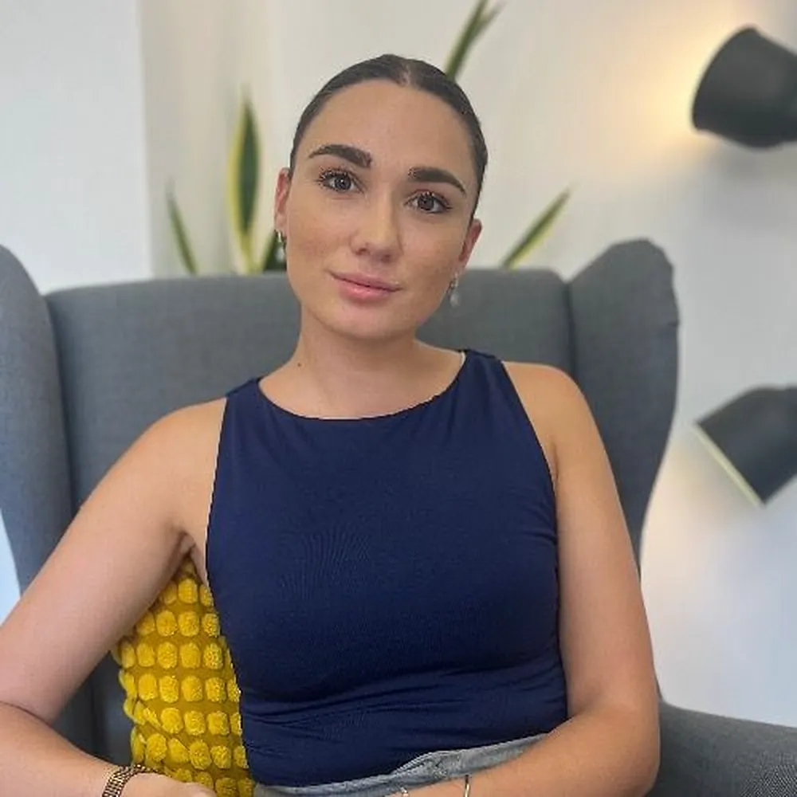
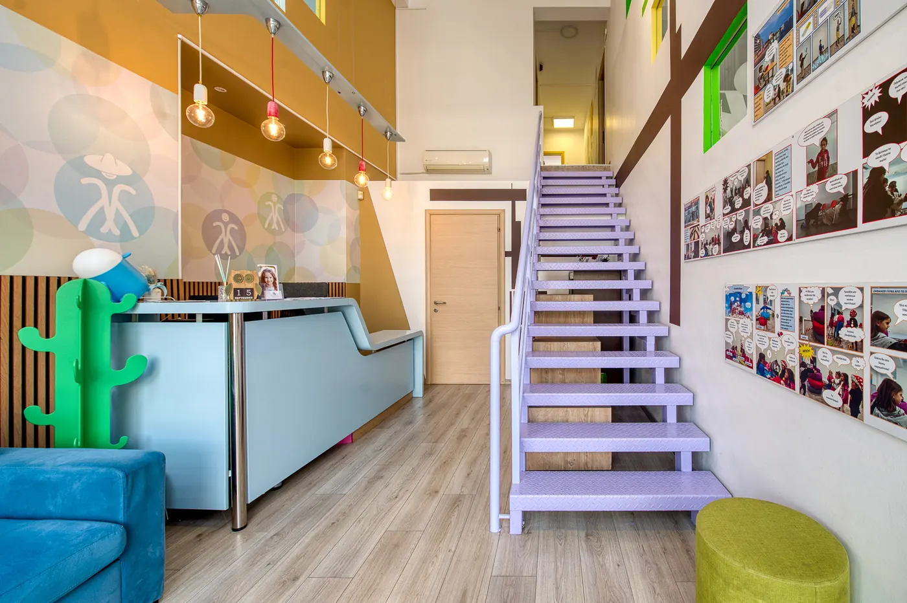
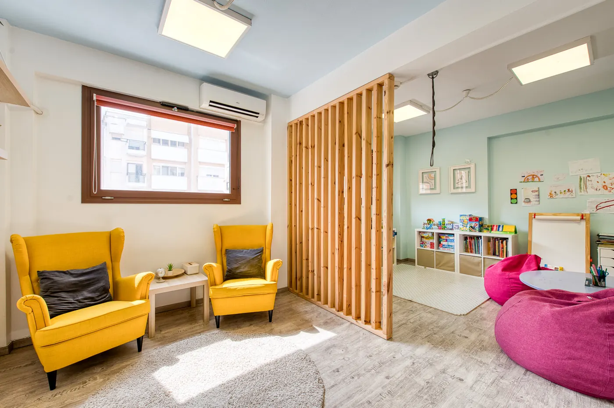
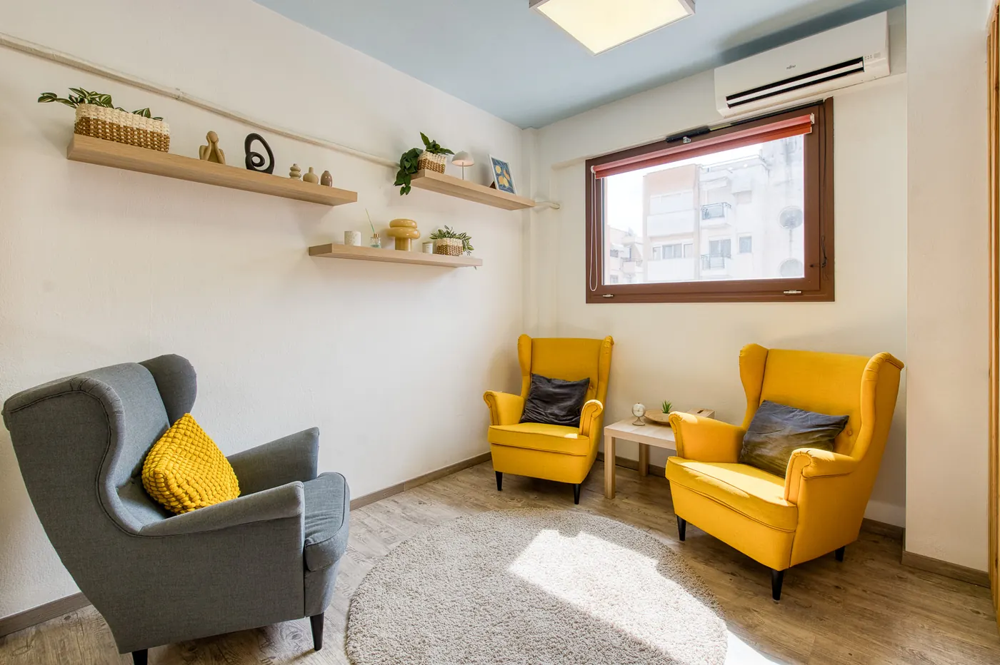
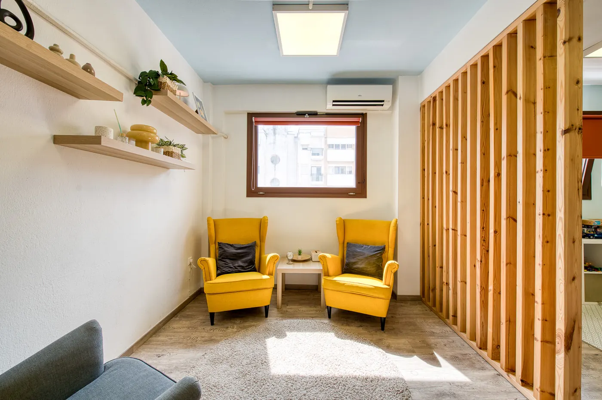

Κωνσταντίνα Μπογιατζή · Κλινική ψυχολόγος
Ένας χώρος για να συναντήσεις τον εαυτό σου
Η ψυχοθεραπεία προσφέρει τον χώρο και τον χρόνο να εκφραστείς ελεύθερα, να κατανοήσεις βαθύτερα τα συναισθήματα και τις ανάγκες σου και να αναγνωρίσεις τα μοτίβα που επαναλαμβάνονται στη ζωή σου. Μέσα σε ένα πλαίσιο εμπιστοσύνης, αποδοχής και επιστημονικά τεκμηριωμένης υποστήριξης, διερευνούμε μαζί όσα σε δυσκολεύουν, με σεβασμό στη δική σου διαδρομή και τον δικό σου ρυθμό.
- ΨυχοθεραπείαΑτομική, ενηλίκων
- ΠροσέγγισηΓνωστική Συμπεριφορική
- Διάρκεια50 λεπτά

Λίγα λόγια για εμένα
Κωνσταντίνα Μπογιατζή, κλινική ψυχολόγος στην Καλαμαριά
Η θεραπευτική μου στάση χαρακτηρίζεται από ζεστασιά, ενσυναίσθηση, αποδοχή και σεβασμό στη μοναδικότητα κάθε ανθρώπου.
Άδεια: ΔΔΥΚΜ/Μ.Ε.Θ.526101(15495)/25-08-2021 · επαληθευμένο προφίλ
Ονομάζομαι Κωνσταντίνα Μπογιατζή και είμαι Κλινική Ψυχολόγος, απόφοιτη του Τμήματος Ψυχολογίας του Αριστοτελείου Πανεπιστημίου Θεσσαλονίκης και κάτοχος Μεταπτυχιακού Τίτλου Σπουδών (MSc) στην Κλινική Ψυχολογία από το ίδιο πανεπιστήμιο, με άδεια ασκήσεως επαγγέλματος.
Η επαγγελματική μου πορεία περιλαμβάνει εμπειρία σε διαφορετικά πλαίσια ψυχικής υγείας, μέσα από τη συνεργασία μου με φορείς όπως το Ελληνικό Κέντρο Ψυχικής Υγιεινής και Ερευνών (Ε.ΚΕ.Ψ.Υ.Ε.), τη Β΄ Πανεπιστημιακή Κλινική του Ψυχιατρικού Νοσοκομείου Θεσσαλονίκης, το Εργαστήρι Εφαρμοσμένης Ψυχολογίας του Α.Π.Θ., την Εταιρεία Alzheimer και τον ΣΟΨΥ, καθώς και με ιδιωτικά κέντρα ειδικών θεραπειών. Σήμερα, εργάζομαι ως Κλινική Ψυχολόγος σε κέντρο ειδικών θεραπειών και παρέχω ατομική ψυχοθεραπεία σε ενήλικες στο πλαίσιο της ιδιωτικής μου πρακτικής.
Στο πλαίσιο της εκπαίδευσής μου, έχω ολοκληρώσει διετή εκπαίδευση στη Γνωσιακή-Συμπεριφορική Θεραπεία (CBT) Παιδιών και Εφήβων στην Ελληνική Εταιρεία Έρευνας Συμπεριφοράς (ΕΕΕΣ). Παράλληλα, συνεχίζω να εμπλουτίζω τις γνώσεις μου μέσα από επιμορφωτικά προγράμματα που αφορούν την κλινική ψυχοπαθολογία, τη διαχείριση του τραύματος και τις σύγχρονες θεραπευτικές προσεγγίσεις.
Στην ψυχοθεραπευτική μου εργασία με ενήλικες, η βασική μου προσέγγιση είναι η Γνωστική-Συμπεριφορική Θεραπεία (CBT). Με ενδιαφέρει να κατανοώ κάθε άνθρωπο μέσα στο προσωπικό του πλαίσιο, λαμβάνοντας υπόψη τις ανάγκες και τις δυσκολίες του στο παρόν, καθώς και τις εμπειρίες που έχουν συμβάλει στη διαμόρφωση της προσωπικής του διαδρομής. Επιπλέον, η εμπειρία μου με παιδιά, εφήβους και γονείς έχει διευρύνει την κατανόησή μου για τη συναισθηματική ανάπτυξη και τη σημασία των πρώιμων σχέσεων.
Η θεραπευτική μου στάση χαρακτηρίζεται από ζεστασιά, ενσυναίσθηση, αποδοχή και σεβασμό στη μοναδικότητα κάθε ανθρώπου. Θεωρώ σημαντική τη σταδιακή διαμόρφωση ενός ασφαλούς χώρου έκφρασης και επεξεργασίας, όπου το άτομο μπορεί να διερευνήσει τις δυσκολίες του, να προσεγγίσει τυχόν δύσκολες ή τραυματικές εμπειρίες του παρελθόντος και να κατανοήσει καλύτερα τον εαυτό του, τα συναισθήματα, τις σκέψεις και τα μοτίβα που επηρεάζουν τη ζωή και τις σχέσεις του.
Πιστεύω ότι η ουσιαστική αλλαγή προϋποθέτει χρόνο, συνέπεια, ενεργή συμμετοχή και μια θεραπευτική διαδικασία που προσαρμόζεται στις ανάγκες και τον προσωπικό ρυθμό του κάθε ανθρώπου. Παράλληλα, δίνω ιδιαίτερη σημασία στη συνεχή επιμόρφωση και στη συστηματική κλινική εποπτεία.
Σπουδές
- Μεταπτυχιακός Τίτλος Σπουδών (MSc) στην Κλινική ΨυχολογίαΑριστοτέλειο Πανεπιστήμιο Θεσσαλονίκης
- Πτυχίο ΨυχολογίαςΑριστοτέλειο Πανεπιστήμιο Θεσσαλονίκης
- Διετής εκπαίδευση στη Γνωστική-Συμπεριφορική Θεραπεία (CBT) Παιδιών και ΕφήβωνΕλληνική Εταιρεία Έρευνας της Συμπεριφοράς (ΕΕΕΣ)
Εμπειρία
- Κλινική Ψυχολόγος, ιδιωτικό γραφείο, Καλαμαριά
- Κλινική Ψυχολόγος, κέντρο ειδικών θεραπειών (σήμερα)
- Ψυχολόγος, Ελληνικό Κέντρο Ψυχικής Υγιεινής και Ερευνών (Ε.ΚΕ.Ψ.Υ.Ε.)
- Ψυχολόγος, Εργαστήρι Εφαρμοσμένης Ψυχολογίας Α.Π.Θ.
- Ψυχολόγος, Β΄ Πανεπιστημιακή Κλινική, Ψυχιατρικό Νοσοκομείο Θεσσαλονίκης
- Εξωτερική συνεργάτιδα, ιδιωτικά κέντρα ειδικών θεραπειών
- Εταιρεία Alzheimer και ΣΟΨΥ
Υπηρεσίες
Ατομική Ψυχοθεραπεία Ενηλίκων
Δια ζώσης στη Θεσσαλονίκη&Διαδικτυακά
Ένας ασφαλής χώρος
Η ατομική ψυχοθεραπεία προσφέρει έναν σταθερό, ασφαλή και εμπιστευτικό χώρο, όπου μπορούμε να μιλήσουμε ελεύθερα για όσα μας απασχολούν.
Η θεραπευτική συμμαχία
Μέσα από τη θεραπευτική συμμαχία, που χτίζεται σταδιακά με εμπιστοσύνη και συνεργασία, διερευνούμε τις δυσκολίες που αντιμετωπίζουμε, τις εμπειρίες που μας έχουν διαμορφώσει και τα μοτίβα που επηρεάζουν τον τρόπο με τον οποίο σκεφτόμαστε, αισθανόμαστε και σχετιζόμαστε με τους άλλους.
Κατανόηση και ανακούφιση
Στόχος είναι η βαθύτερη κατανόηση των δυσκολιών και των αναγκών μας, η ψυχική ανακούφιση και η αναζήτηση νέων, πιο λειτουργικών τρόπων διαχείρισης όσων μας δυσκολεύουν.
Οι συνεδρίες διαρκούν 50 λεπτά, ενώ η συχνότητα και ο ρυθμός τους συμφωνούνται από κοινού, ανάλογα με τις ανάγκες κάθε ανθρώπου.
Παρακάτω παρουσιάζονται ορισμένες από τις βασικές δυσκολίες που συχνά οδηγούν στην αναζήτηση ψυχοθεραπευτικής υποστήριξης.
Τομείς εξειδίκευσης
Με τι μπορούμε να εργαστούμε μαζί
Το επίμονο άγχος, οι κρίσεις πανικού και οι φοβίες μπορούν να επηρεάσουν σημαντικά την καθημερινότητά μας, οδηγώντας συχνά σε ανησυχία, σωματική ένταση και αποφυγή καταστάσεων. Στην ψυχοθεραπεία, εργαζόμαστε αρχικά για την ανακούφιση και τη διαχείριση των συμπτωμάτων, αναγνωρίζοντας τους κύκλους που συντηρούν το άγχος. Σταδιακά, διερευνούμε με ασφάλεια τους βαθύτερους φόβους και τις εμπειρίες που μπορεί να σχετίζονται με αυτό.
Η επίμονη θλίψη, η απώλεια ενδιαφέροντος και ευχαρίστησης, η κόπωση και οι αρνητικές σκέψεις μπορούν να επηρεάσουν σημαντικά την καθημερινότητά μας. Μέσα από την ψυχοθεραπεία, αναγνωρίζουμε τις σκέψεις και τις συμπεριφορές που συντηρούν τη δυσφορία, όπως η αυστηρή αυτοκριτική και η απόσυρση, και διερευνούμε τρόπους σταδιακής αλλαγής τους. Στόχος είναι η συναισθηματική ανακούφιση και η επανασύνδεσή μας με όσα έχουν πραγματική αξία για εμάς.
Ο τρόπος που βλέπουμε τον εαυτό μας επηρεάζει τον τρόπο που σχετιζόμαστε με τους άλλους. Η ανασφάλεια, η ανάγκη για επιβεβαίωση και ο φόβος της απόρριψης μπορεί να δυσκολεύουν την έκφραση των αναγκών μας και τη θέσπιση ορίων. Στην ψυχοθεραπεία, αναγνωρίζουμε τα μοτίβα που επαναλαμβάνονται και αναζητούμε πιο λειτουργικούς τρόπους να εκφραζόμαστε, να θέτουμε όρια και να καλλιεργούμε μια πιο σταθερή και υποστηρικτική σχέση με τον εαυτό μας και τους άλλους.
Η απώλεια ενός αγαπημένου προσώπου, ένας χωρισμός ή μια σημαντική αλλαγή στη ζωή μπορεί να φέρουν βαθιά θλίψη, αβεβαιότητα και συναισθήματα που είναι δύσκολο να διαχειριστούμε. Στην ψυχοθεραπεία, δίνουμε χώρο στην προσωπική εμπειρία της απώλειας, επεξεργαζόμαστε τα συναισθήματα που τη συνοδεύουν και διερευνούμε πώς μπορούμε να συνυπάρξουμε με όσα έχουν αλλάξει, με τρόπο που να σέβεται τον δικό μας ρυθμό.
Οι πρώιμες σχέσεις και οι δύσκολες εμπειρίες συμβάλλουν στη διαμόρφωση των πεποιθήσεών μας για τον εαυτό μας, τους άλλους και τον κόσμο. Μαθαίνουμε να ανταποκρινόμαστε στις προσδοκίες, να αναζητούμε αποδοχή και να προστατευόμαστε με τρόπους που κάποτε μας ήταν απαραίτητοι, αλλά μπορεί σήμερα να μας περιορίζουν. Στην ψυχοθεραπεία, διερευνούμε πώς οι εμπειρίες του παρελθόντος εξακολουθούν να επηρεάζουν το παρόν μας και πώς μπορούμε να αναγνωρίσουμε και να μεταβάλουμε μοτίβα που πλέον μας δυσκολεύουν.
Ο θυμός, η απογοήτευση και η δυσκολία διαχείρισης έντονων συναισθημάτων μπορεί να επηρεάζουν τις αποφάσεις, τη συμπεριφορά και τις σχέσεις μας. Στην ψυχοθεραπεία, αναγνωρίζουμε τις σκέψεις και τις καταστάσεις που πυροδοτούν τις συναισθηματικές μας αντιδράσεις και διερευνούμε πώς μπορούμε να ανταποκρινόμαστε με μεγαλύτερη επίγνωση και ευελιξία. Στόχος είναι η ανάπτυξη πιο λειτουργικών τρόπων διαχείρισης των συναισθημάτων και αντιμετώπισης των δυσκολιών.
Οι παραπάνω τομείς είναι ενδεικτικοί. Κάθε αίτημα είναι μοναδικό, και στην ψυχοθεραπεία προσαρμόζουμε τη διαδικασία στις δικές σας ξεχωριστές ανάγκες και βιώματα.
«Κεντρικός στόχος είναι η δημιουργία ενός ασφαλούς χώρου έκφρασης και κατανόησης.»
– Κωνσταντίνα Μπογιατζή
Η προσέγγιση
Γνωστική συμπεριφορική ψυχοθεραπεία (CBT)
Η Γνωστική Συμπεριφορική Θεραπεία (CBT) είναι μια δομημένη, ερευνητικά τεκμηριωμένη ψυχοθεραπευτική προσέγγιση, που βασίζεται στη σύνδεση των σκέψεων, των συναισθημάτων και των συμπεριφορών μας. Ο τρόπος με τον οποίο ερμηνεύουμε τις καταστάσεις επηρεάζει το πώς αισθανόμαστε και αντιδρούμε. Οι ερμηνείες μας συνδέονται με πεποιθήσεις που διαμορφώνονται μέσα από τις πρώιμες εμπειρίες και τις σχέσεις μας και ενισχύονται κατά τη διάρκεια της ζωής μας.
Μέσα από μια συνεργατική θεραπευτική διαδικασία, διερευνούμε τις πεποιθήσεις και τα επαναλαμβανόμενα μοτίβα που συνδέονται με τις δυσκολίες μας, εξετάζουμε τις ερμηνείες μας και αναζητούμε πιο λειτουργικούς τρόπους σκέψης, συναισθηματικής διαχείρισης και αντιμετώπισης των προκλήσεων. Παράλληλα, κατανοούμε τις εμπειρίες που έχουν συμβάλει στη διαμόρφωση αυτών των μοτίβων, με στόχο τόσο την ανακούφιση από τις δυσκολίες του παρόντος όσο και την ουσιαστικότερη αλλαγή.
Πώς σκέψεις, συναισθήματα και συμπεριφορές τροφοδοτούν η μία την άλλη
Διαδραστική ενότητα
Οι Φακοί της Σκέψης: Πώς Ερμηνεύουμε τον Κόσμο Γύρω μας;
Οι εμπειρίες, τα βιώματα και οι πεποιθήσεις μας διαμορφώνουν τους «φακούς» μέσα από τους οποίους βλέπουμε τον εαυτό μας, τους άλλους και τις σχέσεις μας. Συχνά, σε στιγμές πίεσης ή ανασφάλειας, ο φακός μας μπορεί να «θολώσει», οδηγώντας μας σε αυτόματες ερμηνείες που δεν ανταποκρίνονται απαραίτητα στην πραγματικότητα.
Μέσα από τη θεραπεία, μαθαίνουμε να αναγνωρίζουμε αυτά τα μοτίβα σκέψης, να εξετάζουμε τις ερμηνείες μας και να ανακαλύπτουμε πιο ευέλικτους και ρεαλιστικούς τρόπους να κατανοούμε όσα μας συμβαίνουν.
Μια διαφορετική ματιά μπορεί να κάνει τη διαφορά.
Δεν χρειάζεται να πιέζουμε τον εαυτό μας να σκέφτεται θετικά. Μπορούμε να μάθουμε να αναγνωρίζουμε τις αυτόματες σκέψεις μας, να εξετάζουμε τα δεδομένα και να αντιμετωπίζουμε τον εαυτό μας με μεγαλύτερη κατανόηση και επιείκεια.
Ο χώρος
Ένα ήρεμο γραφείο στην Καλαμαριά
Ζεστό φως, άνετες πολυθρόνες και ησυχία — στη Στρατηγού Σαράφη 48Δ.








Αξιολογήσεις
Τι λένε οι θεραπευόμενοι
10/10δεκάδες αξιολογήσεις στο doctoranytime
Όλες οι αξιολογήσεις
Η Κωνσταντίνα είναι εξαιρετική επαγγελματίας και ένας υπέροχος άνθρωπος, με βαθιά ενσυναίσθηση και ουσιαστικό σεβασμό απέναντι στον άνθρωπο που έχει απέναντι της. Διακρίνεται για την ευγένεια, την ηρεμία και τη διακριτικότητά της. Στέκεται δίπλα σου με βαθιά κατανόηση και αποδοχή, δημιουργώντας έναν χώρο ασφάλειας και εμπιστοσύνης, όπου μπορείς να εκφραστείς ελεύθερα και να είσαι ο εαυτός σου, χωρίς να αισθάνεσαι ότι κρίνεσαι. Έχουμε μαζί μια πορεία τριών ετών, κατά την οποία η παρουσία και η στήριξη της υπήρξαν πολύτιμες για μένα, ιδιαίτερα σε δύσκολες στιγμές. Νιώθω πραγματικά τυχερή που είναι η θεραπεύτρια μου και τη συστήνω ανεπιφύλακτα.
Γεωργια18 Σεπτεμβρίου 2026
Ένας άνθρωπος που από την πρώτη στιγμή σε κάνει να νιώθεις ασφάλεια και ότι πραγματικά σε ακούει. Με πολλή ζεστασιά, κατανόηση και χωρίς καμία κριτική, με έχει βοηθήσει να δω πολλά πράγματα διαφορετικά. Τη συστήνω ανεπιφύλακτα.
Ελίνα24 Σεπτεμβρίου 2026
Η Κωνσταντίνα είναι μια εξαιρετική επαγγελματίας, με πραγματικό ενδιαφέρον για τον άνθρωπο, ενσυναίσθηση και συνέπεια. Ξεχωρίζει για την αφοσίωσή της στη δουλειά της. Είναι ένας άνθρωπος που εμπνέει εμπιστοσύνη και ασφάλεια και αντιμετωπίζει κάθε άνθρωπο με σεβασμό και υπευθυνότητα. Τη συστήνω ανεπιφύλακτα!
Alexandra24 Σεπτεμβρίου 2026
Από την πρώτη στιγμή ένιωσα πολύ άνετα μαζί της. Είναι ένας ζεστός και προσιτός άνθρωπος, που ακούει με πραγματικό ενδιαφέρον και χωρίς να σε κάνει να αισθάνεσαι ότι σε κρίνει. Ο τρόπος της είναι ήρεμος και ανθρώπινος και σε βοηθά να εκφραστείς με ασφάλεια. Τη συστήνω με πολλή εμπιστοσύνη.
Σοφία20 Σεπτεμβρίου 2026
Η κυρία Μπογιατζή είναι εξαιρετική στη δουλειά της και έχω δει πολύ μεγάλη βελτίωση σε ό,τι αντιμετωπίζω με τη βοήθειά της. Είναι προσιτή και σε έκτακτες περιπτώσεις ήταν πάντα διαθέσιμη. Τηρεί απόλυτα τους κανόνες δεοντολογίας και αποτελεί παράδειγμα.
Βαγια17 Σεπτεμβρίου 2026
Εξαιρετική ως επαγγελματίας κι ως άνθρωπος .Μου ενέπνευσε εμπιστοσύνη απ την πρώτη στιγμή και με βοηθάει πολύ στα θέματα που συζητάμε Έχουμε συμπληρώσει δυο χρόνια και συνεχίζουμε ...Τη συστήνω ανεπιφύλακτα !
Δέσποινα17 Σεπτεμβρίου 2026
Εξαιρετική επαγγελματίας με βαθιά κατανόηση και ενδιαφέρον. Εκπέμπει ηρεμία και απόλυτο σεβασμό με αποτέλεσμα να σε κάνεις να νιώθεις ασφάλεια και σιγουριά!
Stefanos17 Σεπτεμβρίου 2026
Με βοήθησε πολύ σε μια δύσκολη περίοδο, εξαιρετική επαγγελματίας.
Anastasia18 Σεπτεμβρίου 2026
Σωστή επαγγελματίας και πάνω από όλα άνθρωπος. Την συστήνω ανεπιφύλακτα!
Κωνσταντίνα18 Σεπτεμβρίου 2026
Πολύ καλή εμπειρία . Ευχάριστη και βοηθητική
ΡΑΦΑΗΛΙΑ17 Σεπτεμβρίου 2026
Ερωτήσεις
Συχνές ερωτήσεις
Κάτι άλλο που σας απασχολεί; Τηλεφωνήστε μου — το συζητάμε πριν από την πρώτη συνεδρία.
Πόσο διαρκεί η ψυχοθεραπεία;
Η ψυχοθεραπεία είναι μια διαδικασία που απαιτεί χρόνο, συστηματικότητα και ενεργή προσωπική συμμετοχή. Η ουσιαστική αλλαγή δεν αφορά μόνο την ανακούφιση από τα συμπτώματα, αλλά και την κατανόηση του εαυτού μας, τη διερεύνηση των εμπειριών μας και την αναγνώριση βαθύτερων πεποιθήσεων και επαναλαμβανόμενων μοτίβων που επηρεάζουν τη ζωή και τις σχέσεις μας. Η διάρκεια της θεραπείας διαμορφώνεται ανάλογα με τις ανάγκες και τους στόχους κάθε ανθρώπου.
Τι να περιμένω από την πρώτη συνεδρία;
Η πρώτη μας συνάντηση είναι μια ευκαιρία να γνωριστούμε και να αρχίσουμε να διερευνούμε όσα σας φέρνουν στην ψυχοθεραπεία. Θα συζητήσουμε τις δυσκολίες που αντιμετωπίζετε, το πώς επηρεάζουν την καθημερινότητά σας και τι θα θέλατε να κατανοήσετε ή να αλλάξετε. Δεν χρειάζεται να έχετε οργανώσει τις σκέψεις σας ή να γνωρίζετε ακριβώς από πού να ξεκινήσετε. Η συζήτηση θα εξελιχθεί σταδιακά, με σεβασμό στις ανάγκες και στον προσωπικό σας ρυθμό, ώστε να εξετάσουμε μαζί πώς θα μπορούσαμε να προχωρήσουμε.
Παρέχετε διαδικτυακές συνεδρίες ψυχοθεραπείας; Είναι εξίσου αποτελεσματικές με τις δια ζώσης;
Ναι, οι συνεδρίες μπορούν να πραγματοποιηθούν και διαδικτυακά, μέσω βιντεοκλήσης. Η διαδικτυακή ψυχοθεραπεία αποτελεί μια επιστημονικά τεκμηριωμένη επιλογή, με έρευνες να δείχνουν συγκρίσιμη αποτελεσματικότητα με τη δια ζώσης ψυχοθεραπεία για αρκετές ψυχολογικές δυσκολίες. Οι συνεδρίες πραγματοποιούνται στο συμφωνημένο θεραπευτικό πλαίσιο, με την ίδια έμφαση στην εμπιστευτικότητα και στη θεραπευτική συνεργασία. Για την πραγματοποίησή τους, είναι σημαντικό να υπάρχει σταθερή σύνδεση στο διαδίκτυο και ένας ήσυχος, ιδιωτικός χώρος όπου μπορείτε να μιλήσετε με άνεση.
Τηρείται το θεραπευτικό απόρρητο;
Η εμπιστευτικότητα αποτελεί βασικό στοιχείο της θεραπευτικής διαδικασίας. Όσα μοιράζεστε μαζί μου στις συνεδρίες προστατεύονται από το επαγγελματικό απόρρητο, σύμφωνα με τις αρχές της επαγγελματικής δεοντολογίας και την ισχύουσα νομοθεσία. Το απόρρητο μπορεί να αρθεί σε συγκεκριμένες περιπτώσεις που προβλέπονται από τον νόμο, όπως όταν υπάρχει σοβαρός κίνδυνος για τη ζωή ή τη σωματική ακεραιότητα του θεραπευόμενου ή άλλου προσώπου.
Τι γίνεται αν χρειάζομαι διαφορετική μορφή υποστήριξης;
Οι ανάγκες κάθε ανθρώπου είναι διαφορετικές και ενδέχεται να μεταβάλλονται κατά τη διάρκεια της θεραπείας. Εάν διαπιστώσουμε ότι χρειάζεται συμπληρωματική υποστήριξη, όπως ψυχιατρική αξιολόγηση ή παρακολούθηση, ή ότι είναι καταλληλότερο ένα διαφορετικό πλαίσιο φροντίδας, θα το συζητήσουμε με ειλικρίνεια και θα σας κατευθύνω υπεύθυνα προς τον κατάλληλο επαγγελματία ή φορέα. Ανάλογα με τις ανάγκες σας, μπορεί να χρειαστεί συνεργασία με άλλους επαγγελματίες ή παραπομπή σε διαφορετικό πλαίσιο φροντίδας, με στόχο την κατάλληλη υποστήριξή σας.
Επικοινωνία
Κλείστε μια συνεδρία
Τηλεφωνήστε μου ή κλείστε online μέσω doctoranytime — στο γραφείο στην Καλαμαριά ή με βιντεοκλήση.
- 698 671 7857
- Στρατηγού Σαράφη 48Δ, 551 32 Καλαμαριά Θεσσαλονίκης
- konstantina.mpogiatzi@gmail.com
- Online συνεδρίες με βιντεοκλήση
Πώς θα έρθετε
Το γραφείο βρίσκεται στη Στρατηγού Σαράφη 48Δ, στην Καλαμαριά Θεσσαλονίκης (Τ.Κ. 551 32). Δεν διαθέτει δικό του χώρο στάθμευσης — αν έρθετε με αυτοκίνητο, υπολογίστε λίγο χρόνο για να βρείτε θέση στη γειτονιά.
Οδηγίες στο Google Maps